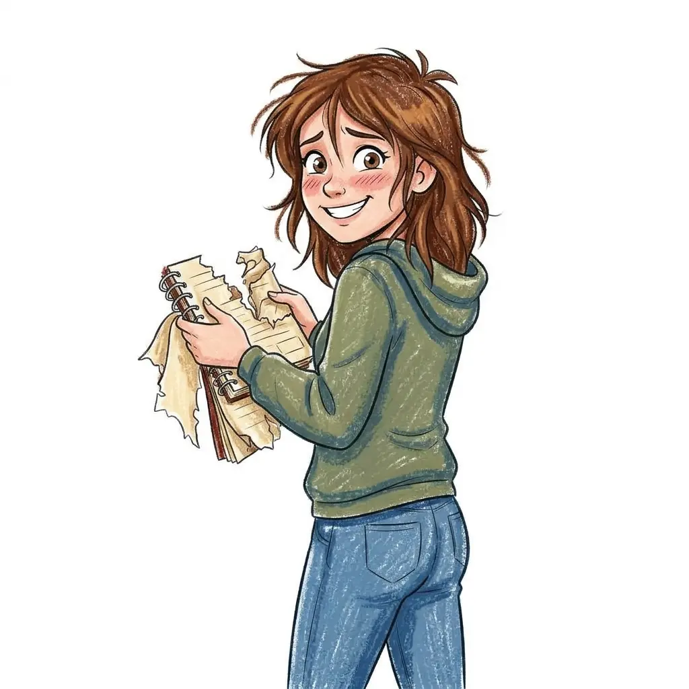

404
Página no encontrada

"¡Ups! Se rompió la página, pero te juro que no fui yo"
Parece que el enlace que seguiste no está disponible, fue movido o la página ya no existe. Pero no te preocupes, tu agenda ideal sigue estando a un clic.